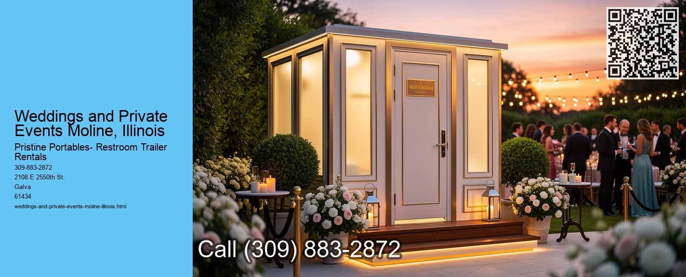

Weddings and private events in Moline, Illinois, offer a charming blend of tradition, community, and picturesque settings. Nestled along the banks of the Mississippi River, this city provides a unique backdrop that is both intimate and vibrant, making it an ideal location for such significant occasions.
Moline is part of the Quad Cities, a region that boasts a rich history and a strong sense of community. This is reflected in the warmth and hospitality extended to those looking to celebrate their special moments here.
For couples planning their wedding, Moline presents a variety of options. From elegant banquet halls to rustic outdoor venues, there is something to suit every couples vision.
Molines local businesses play a crucial role in making weddings and private events memorable. The city is home to talented photographers, skilled florists, and exceptional caterers who are dedicated to delivering high-quality services. These professionals understand the importance of personalizing each event to reflect the unique personality and style of the hosts. Their commitment ensures that every detail, from the décor to the cuisine, aligns seamlessly with the couples vision.
Private events in Moline are not limited to weddings.
Moreover, Molines convenient location makes it easily accessible for guests traveling from neighboring cities and states. The presence of the Quad City International Airport and major highways ensures that visitors can reach the city with ease, allowing for smooth and stress-free travel plans.
The natural beauty of Moline, combined with its rich cultural tapestry, provides an idyllic setting for capturing unforgettable memories. The city's parks and riverfront areas offer perfect spots for photography, ensuring that the special moments are preserved in stunning backdrops.
In conclusion, weddings and private events in Moline, Illinois, are marked by a harmonious blend of scenic beauty, community spirit, and professional expertise. The citys welcoming environment, coupled with its diverse venue options and local services, makes it a compelling choice for those looking to celebrate lifes most cherished moments. Whether you are a local resident or a visitor from afar, Moline promises an experience that is both unique and unforgettable, leaving you with memories that will last a lifetime.
Events and Venues for Rental Moline, Illinois